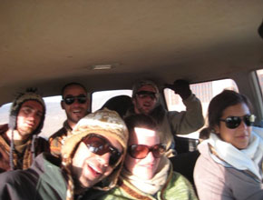
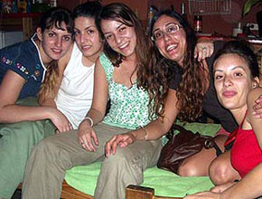

I bought an ethnic carpet in Uyuni, near the salt desert in Bolivia. This one reminds me of it.
At the time we were driving a jeep

through the desert when I noticed our driver dozing off.
A week before that, a group of travellers had a fatal
accident

at the same place.
I slapped our driver to wake him up.
At the time we were driving a jeep
I slapped our driver to wake him up.